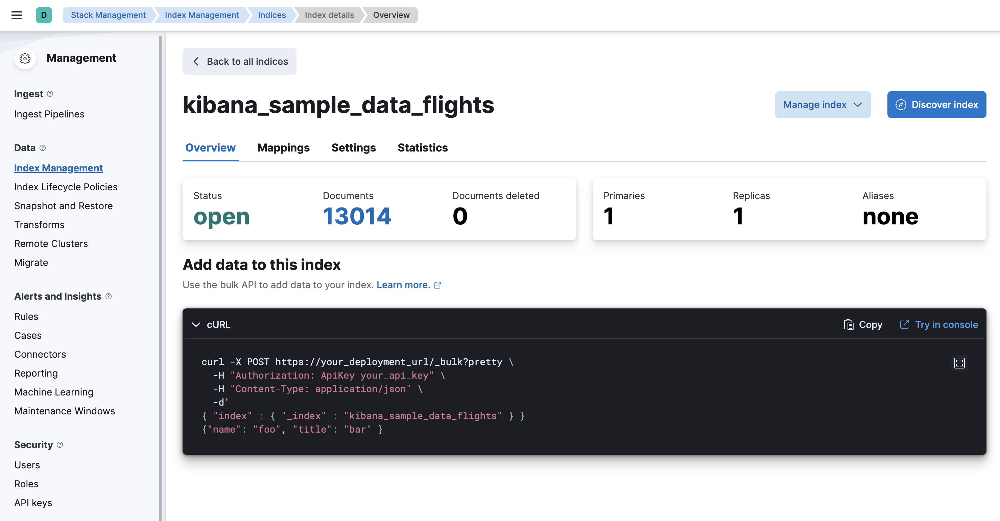
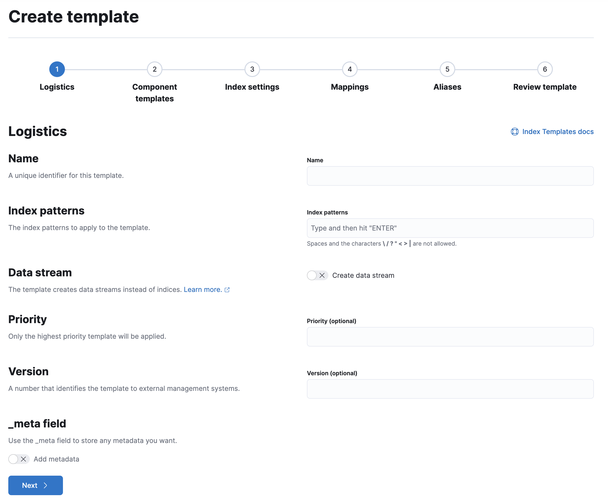
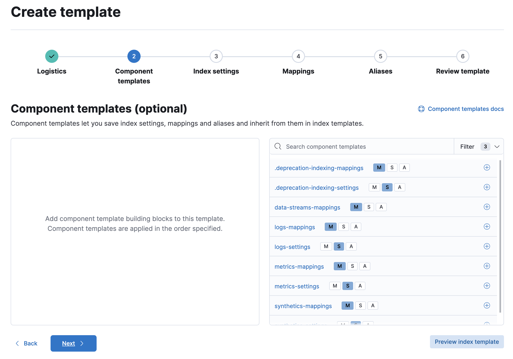
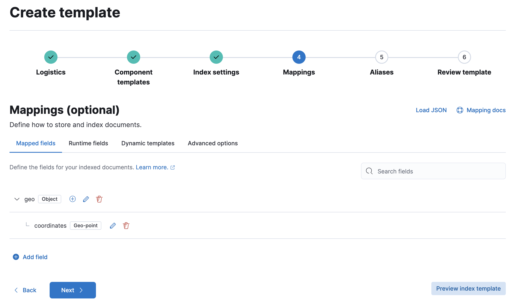

Index management in Kibanaedit
Kibana’s Index Management features are an easy, convenient way to manage your cluster’s indices, data streams, index templates, and enrich policies. Practicing good index management ensures your data is stored correctly and in the most cost-effective way possible.
To use these features, go to Stack Management > Index Management.
Required permissionsedit
If you use Elasticsearch security features, the following security privileges are required:
-
The
monitorcluster privilege to access Kibana’s Index Management features. -
The
view_index_metadataandmanageindex privileges to view a data stream or index’s data. -
The
manage_index_templatescluster privilege to manage index templates.
To add these privileges, go to Stack Management > Security > Roles or use the Create or update roles API.
Manage indicesedit
Investigate your indices and perform operations from the Indices view.
- To show details and perform operations such as close, forcemerge, and flush, click the index name. To perform operations on multiple indices, select their checkboxes and then open the Manage menu. For more information on managing indices, refer to Index APIs.
- To filter the list of indices, use the search bar or click a badge. Badges indicate if an index is a follower index, a rollup index, or frozen.
-
To drill down into the index mappings, settings, and statistics, click an index name. From this view, you can navigate to Discover to further explore the documents in the index.

Manage data streamsedit
Investigate your data streams and address lifecycle management needs in the Data Streams view.
The value in the Indices column indicates the number of backing indices. Click this number to drill down into details.
A value in the data retention column indicates that the data stream is managed by a data stream lifecycle policy. This value is the time period for which your data is guaranteed to be stored. Data older than this period can be deleted by Elasticsearch at a later time.
- To view more information about a data stream, such as its generation or its current index lifecycle policy, click the stream’s name. From this view, you can navigate to Discover to further explore data within the data stream.
- [preview] This functionality is in technical preview and may be changed or removed in a future release. Elastic will work to fix any issues, but features in technical preview are not subject to the support SLA of official GA features. To edit the data retention value, open the Manage menu, and then click Edit data retention. This action is only available if your data stream is not managed by an ILM policy.
Manage index templatesedit
Create, edit, clone, and delete your index templates in the Index Templates view. Changes made to an index template do not affect existing indices.
Try it: Create an index templateedit
In this tutorial, you’ll create an index template and use it to configure two new indices.
Step 1. Add a name and index pattern
-
In the Index Templates view, open the Create template wizard.
 -
In the Name field, enter
my-index-template. -
Set Index pattern to
my-index-*so the template matches any index with that index pattern. - Leave Data Stream, Priority, Version, and _meta field blank or as-is.
Step 2. Add settings, mappings, and aliases
-
Add component templates to your index template.
Component templates are pre-configured sets of mappings, index settings, and aliases you can reuse across multiple index templates. Badges indicate whether a component template contains mappings (M), index settings (S), aliases (A), or a combination of the three.
Component templates are optional. For this tutorial, do not add any component templates.
 - Define index settings. These are optional. For this tutorial, leave this section blank.
-
Define a mapping that contains an object field named
geowith a childgeo_pointfield namedcoordinates:Alternatively, you can click the Load JSON link and define the mapping as JSON:
{ "properties": { "geo": { "properties": { "coordinates": { "type": "geo_point" } } } } }You can create additional mapping configurations in the Dynamic templates and Advanced options tabs. For this tutorial, do not create any additional mappings.
-
Define an alias named
my-index:{ "my-index": {} } - On the review page, check the summary. If everything looks right, click Create template.
Step 3. Create new indices
You’re now ready to create new indices using your index template.
-
Index the following documents to create two indices:
my-index-000001andmy-index-000002.response = client.index( index: 'my-index-000001', body: { "@timestamp": '2019-05-18T15:57:27.541Z', ip: '225.44.217.191', extension: 'jpg', response: '200', geo: { coordinates: { lat: 38.53146222, lon: -121.7864906 } }, url: 'https://media-for-the-masses.theacademyofperformingartsandscience.org/uploads/charles-fullerton.jpg' } ) puts response response = client.index( index: 'my-index-000002', body: { "@timestamp": '2019-05-20T03:44:20.844Z', ip: '198.247.165.49', extension: 'php', response: '200', geo: { coordinates: { lat: 37.13189556, lon: -76.4929875 } }, memory: 241_720, url: 'https://theacademyofperformingartsandscience.org/people/type:astronauts/name:laurel-b-clark/profile' } ) puts responsePOST /my-index-000001/_doc { "@timestamp": "2019-05-18T15:57:27.541Z", "ip": "225.44.217.191", "extension": "jpg", "response": "200", "geo": { "coordinates": { "lat": 38.53146222, "lon": -121.7864906 } }, "url": "https://media-for-the-masses.theacademyofperformingartsandscience.org/uploads/charles-fullerton.jpg" } POST /my-index-000002/_doc { "@timestamp": "2019-05-20T03:44:20.844Z", "ip": "198.247.165.49", "extension": "php", "response": "200", "geo": { "coordinates": { "lat": 37.13189556, "lon": -76.4929875 } }, "memory": 241720, "url": "https://theacademyofperformingartsandscience.org/people/type:astronauts/name:laurel-b-clark/profile" } -
Use the get index API to view the configurations for the new indices. The indices were configured using the index template you created earlier.
response = client.indices.get( index: 'my-index-000001,my-index-000002' ) puts response
GET /my-index-000001,my-index-000002
Manage enrich policiesedit
Use the Enrich Policies view to add data from your existing indices to incoming documents during ingest. An enrich policy contains:
- The policy type that determines how the policy matches the enrich data to incoming documents
- The source indices that store enrich data as documents
- The fields from the source indices used to match incoming documents
- The enrich fields containing enrich data from the source indices that you want to add to incoming documents
- An optional query.
When creating an enrich policy, the UI walks you through the configuration setup and selecting the fields. Before you can use the policy with an enrich processor or ES|QL query, you must execute the policy.
When executed, an enrich policy uses enrich data from the policy’s source indices to create a streamlined system index called the enrich index. The policy uses this index to match and enrich incoming documents.
Check out these examples: